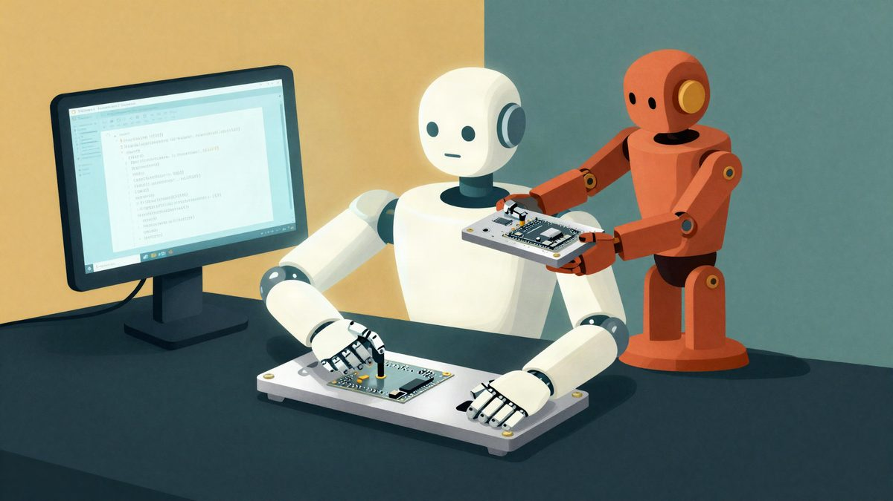

Keurig kavomat je potrošio 1 TB prometa u deset dana, korisnik sumnja na skeniranje kućne mreže

Korisnik tvrdi da je pametni kavomat njegova oca u deset dana potrošio 1 TB internetskog prometa, uglavnom skeniranjem kućne mreže. Analiza paketa nije pokazala što se prenosilo, a Keurig nije komentirao slučaj. Da kavomat prikuplja podatke za oglašivače, nije dokazano, a moguća je i greška u softveru.
Korisnik koji je slučaj opisao na internetu kaže da je kavomat njegova oca u deset dana potrošio 1 TB internetskog prometa, i to uglavnom skeniranjem kućne mreže. Kad je to otkrio, odmah ga je isključio i najavio da će kupiti drugi model koji manje opterećuje lokalnu mrežu.
IP pakete kavomata pokušao je analizirati Wiresharkom i drugim alatima, ali bez jasnog rezultata, pa nije poznato što se točno prenosilo. Moguće je da je u softveru greška, jer uobičajeno skeniranje mreže i praćenje okolnih uređaja ne bi smjeli trošiti toliko prometa.
Odakle sumnje
Tehnologija Automatic content recognition (ACR) prvi put se pojavila u aplikaciji Shazam, koja prepoznaje glazbu prema hashevima kratkih audiofragmenata. Kasnije su je počeli koristiti i televizori. Jednom u sekundi televizor snimi „otisak” ekrana, a to je dvadesetak kvadratnih dijelova piksela pretvorenih u niz brojeva. Niz se zajedno s ID-jem televizora šalje na server i uspoređuje s bazom poznatog sadržaja. Tako nastaje popis svega što korisnik gleda, sekundu po sekundu, a gotovi profili prodaju se desecima klijenata.
The Washington Post je u manjem eksperimentu pomoću alata IoT Inspector sa Sveučilišta Princeton pratio mrežni promet televizora Samsung, LG, Vizio i TCL. Televizori su slali podatke o sadržaju ekrana neovisno o izvoru signala, bilo da je riječ o kabelskoj televiziji, aplikaciji, USB-u ili streamingu.
Otad se sumnje na prikupljanje osobnih podataka pojavljuju i kod pametnih zvučnika, hladnjaka, kuhala i friteza na vrući zrak. Svi ti uređaji danas dolaze s vlastitom mobilnom aplikacijom i pristupom internetu. Postoje i platforme za „pametnu kuhinju”, poput KitchenOS-a, čiji razvojni tim prodaju svakog pametnog uređaja vidi kao početak doživotnog odnosa s kupcem.
Pristanak i cijena
Podaci se u pravilu prikupljaju uz pristanak vlasnika, koji pri postavljanju uređaja nije maknuo kvačicu. Opcija može biti skrivena u dugom popisu uvjeta. Vizio na televizoru prikazuje obavijest o snimanju otisaka ekrana, a gumb „Accept” unaprijed je istaknut. Oko 90 % kupaca, tvrdi autor izvora, tu opciju ostavi. Na Samsungovim televizorima dozvola za ACR skrivena je u izborniku s pravilima i uvjetima, a opcija „Slažem se sa svime” također je unaprijed odabrana.
Autor izvora tvrdi i da su pametni televizori jeftiniji od „glupih” upravo zbog toga. Prosječan Amerikanac pred televizorom navodno provodi 3,5 sata dnevno. Povijest gledanja ne sadrži osjetljive pretrage ni financijske podatke, ali omogućuje detaljan profil potrošača. Od 2021. kod nekih proizvođača televizora praćenje gledatelja postalo je glavni, a ne dodatni izvor prihoda.
Na većini uređaja prikupljanje osobnih podataka moguće je isključiti nakon instalacije, ako se u izborniku pronađe odgovarajuća opcija.
Izvor: Habr vijesti
Povezani članci
- Tutor španjolskog sumnja da mu je učenik kloniranjem glasa u ElevenLabsu napravio naratora za YouTube kanal7. studenoga 2026.

Cursor priznao da je Composer 2 izgrađen na Moonshotovu modelu Kimi22. ožujka 2026. Kineski Yushi Space testirao je "štapiće" za hvatanje raketa od 100 tona23. studenoga 2026.
Kineski Yushi Space testirao je "štapiće" za hvatanje raketa od 100 tona23. studenoga 2026.